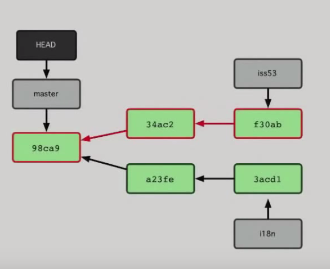

github介绍
毛毛
2017-1-7 于杭州
git篇
工作区
暂存区
提交区
文件的三种状态：
未跟踪 untrancked
未暂存 changs to be commited
未提交 changes not staged for commit
查看工作区文件和暂存区的差异 git diff
查看暂存区和提交区的区别 git diff --cached
取消对工作区文件的修改 git checkout -- [file]
取消暂存区的操作 git reset HEAD [file]
重新修改提交说明 git commit --amend
查看分支之间的差异
git log branchA ^branchB
查看合并的分支和没有合并的分支
git branch --merged | git branch --no-merged
查看分支状态
git log --all --graph --pretty=oneline --abbrev-commit --decorate
git分支合并情况
快进合并
git merge iss53

github篇
github工作流是怎么样的？
多人协作开发
创建分支
提交代码
pull request
查看和讨论你的想法和代码：@somebody/team #issue(可以链接到其他issue) markdown语法
部署分支到生产进行测试，如果有问题回退到主干
合并分支到主干:Pull Request的历史是一个项目的演进过程
简单介绍如何参与开源项目？
找项目
查看代码和文档：比如有docs目录，readme或者wiki 特别是Contributing，一般是维护人员或者主要开发人员想要的特性或者pull request（加了这个文件后，其他人创建issue或者pull request的时候会看到指向这个文件的链接）
如果有发现BUG或者看不懂文档或者有想法怎么办？创建一个issue！
对BUG打补丁或者增加特性：pull request!
github使用技巧
如何将其他人加入到项目的开发？
如何对项目创建一个github页面？
比较你的提交
https://github.com/MingXingTeam/React-Demo/compare
查看某个用户的所有提交
https://github.com/superInfo2/front-end-resources/commits/master?author=MingXingTeam
在仓库中打开帮助快捷键
?
短地址
 http://git.io/
http://git.io/
查看pull request的补丁或者内容比对

merge的时候关闭issues

查看某个文件的提交的人和变化的内容

issue中创建更小的任务列表：TODO
快速加上版权信息和.gitignore

issue里面的milestone和assignee是什么?
issue里面创建自己的label
撤销pull request

issue快速引用
选中 按下r就行
跟踪pull request和issues

发现新项目